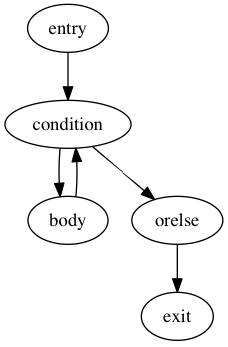
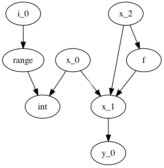
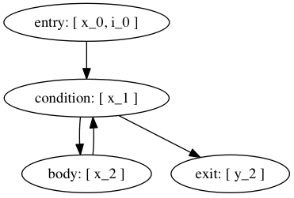
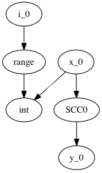

Numba IR Stages¶
To allow Numba as a general purpose compiler, we provide different entry points. These entry points also allow for further decoupling of the Numba architecture. We propose several new Intermediate Representations (IRs), from high-level to low-level:
- The Python AST IR (input to a numba frontend)
- Initial Python-like IR
- Untyped IR in SSA form
- Typed IR in SSA form
- Low-level IR in SSA form
- Final LLVM IR, the final input for LLVM. This IR is unportable since the sizes of types are fixed.
All IRs except the last are portable across machine architectures.
Intermediate Representations¶
Each IR consists of two layers, namely a higher-level Abstract Syntax Tree encoding, specified, verified and generated by our variant of ASDL schemas. We add the symbol @ to signal that the given type is to be treated as a “unique” object, i.e. one that compares by identity as opposed to structural equality. These objects each carry a unique id and are serialized in a table (and they may participate in circular references, i.e. in a graph):
Serialization to LLVM IR (or a direct textual serialization) will consist of something like a generated table, e.g.
>>> mod = schema.parse("foo = @Foo(str name, foo attr)")
>>> foo1 = mod.Foo("foo1")
>>> foo2 = mod.Foo("foo2", foo1)
>>> foo1.attr = foo2
>>> foo1
Foo(name="foo1", attr=Foo("foo2", Foo(name="foo1", attr=...)))
>>> build_llvm_ir(foo1) # name, id, attr
!0 = metadata !{ metadata !"foo1", i64 0, i64 1 }
!1 = metadata !{ metadata !"foo2", i64 1, i64 0 }
Attributes may also be hidden using \, which means the attribute is not considered a child for the purposes of visitors or term rewrites:
foo = @Foo(str name, foo \attr)
Use of Schemas¶
We can use our schemas to:
Validate IR instances
Generate Python AST classes with typed properties and fast visitor dispatching
Generate Higher- or Lower-level LLVM IR
Generate conversion code to and from an ATerm representation
Generate a flat representation. E.g. a form of Three Address Code
Generate an implementation in other languages that can load a serialized representation and construct an AST in that langauge
Generate type definitions and serialization routines in other languages.
Note
This can help other languages target Numba as a backend compiler more easily, since they can build up the IR using in-memory data structures for the IR most suitable to their needs.
Generate definitions for use in Attribute Grammars ([1])
Executable IR (Executable IR)
LLVM IR¶
We can generate automatic mapping code to map schema instances to opaguely typed LLVM IR automatically, which is the abstract syntax generated post-order. E.g. a + b * c becomes:
!0 = metadata !{ metadata !"operator", i8* "Mul" }
!1 = metadata !{ metadata !"operator", i8* "Add" }
define i8* some_func(i8* %a, i8* %b, i8* %c) {
entry:
%0 = call i8* @numba.ir.BinOp(%b, metadata !{0}, %c)
%1 = call i8* @numba.ir.BinOp(%a, metadata !{1}, %0)
ret %1
}
The LLVM IR contains the high-level block structure, i.e. an if statement will generate IR along the following lines:
define i8* @func() {
entry:
%0 = blockaddress(@func, %bb_test)
%1 = blockaddress(@func, %bb_true)
%2 = blockaddress(@func, %bb_false)
%3 = i8* @If(i8* %0, i8* %1, i8* %2)
bb_test:
...
bb_true:
...
bb_false:
...
}
An LLVM IR instance can be mapped back losslessly to an IR instance of a different representation (e.g. a DAG).
We can use a well-defined abstraction that can map these higher-level constructs to the lower-level equilvent. This can be used simultenously by:
- The control flow graph builder
- Any IR that wants control flow expanded
- The code generator
We can use this construct to expand our IR to IR that corresponds more closely to the final IR we would generate, where all control flow is expanded to branches:
define i8* @func() {
entry:
br label %bb_test
bb_test:
%test = ...
br i1 %test, label %bb_true, label %bb_false
bb_true:
...
br label %bb_false
bb_false:
...
br label %bb_exit
bb_exit:
...
}
Passes can do not care about special control structures can then execute on this IR.
Executable IR¶
There are two ideas:
- Implement a library to which the generated abstract LLVM IR can link. E.g. implement functions such as @BinOp(%add, %lhs, %rhs) (we can call this function PyNumber_Add).
If we define new lowered IRs are a specialized subset of higher-level IRs, we get execution for free:
Generate conversion code to and from a high-level Python AST or source code.
For instance, PointerIndex(base_type, node, index) becomes Call(func=Name('base_type'), args=[Subscript(subnode, index)]). This function can then be compiled and interpreted with Python, using abstract argument inputs.
Alternatively, if we already know which operations our data corresponds to, we can generate a simple AST or bytecode evaluator.
Initial Python-like IR¶
The initial, Python-like, IR is a subset of a Python AST, the syntax exludes:
- FunctionDef and ClassDef, which are normalized to Assign of the function and subsequent decorator applications and assignments
- No list, dict, set or generators comprehensions, which are normalized to For(...) etc + method calls to list.append, etc.
- Normalized comparisons
The initial IR is what numba decorators produce given a pure Python AST, function or class as input.
Sample schema
module initial {
mod = NumbaModule(unit* stats)
unit
= lambda
| class
-- functions --
lambda
= Lambda(posinfo pos, funcmeta meta, str name, arguments args,
expr body)
funcmeta
= FunctionMetaData(
-- locals={'foo': double}
str* names, -- 'foo'
nbtype* types, -- double
bool nopython,
)
-- classes --
class
= ClassExpr(posinfo pos, bool is_jit, attrtable table, method* methods)
attrtable
= AttributeTable(str* attrnames, nbtype* attrtypes)
method
= Method(posinfo pos, methodsignature signature, stat* body)
-- Types --
type = nbtype
nbtype
= char | short | int_ | long_ | longlong
| uchar | ushort | uint | ulong | ulonglong
| ...
| functype
| methodtype
methodtype
= MethodSignature(functype signature,
bool is_staticmethod,
bool is_classmethod,
bool is_jit, -- whether this is a jit or
-- autojit method
)
}
Note
Numba would construct this before starting any pipeline stage.
Untyped IR in SSA form¶
Untyped IR in SSA form would be constructed internally by numba during and after the CFA pass and before type inference. This adds to the initial schema control flow information such as:
* SSA
* Stack variable stack allocation (non-ssa variables)
* Def-use and use-def chains
The high-level CFG at this stage is gone, and we have an untyped IR in SSA form (that is, it contains PhiNode AST nodes with uses from variables of incoming blocks). It also has a reference to all live phis in preorder according to the dominator tree in the FunctionDef.
Furthermore:
- ast.Name is rewritten to NameTarget, NameReference or NameParam
- If, While and For lose the else clause
- In-place assignments are normalized
module untyped {
function
= FunctionDef(phi \all_phis, ...)
phi
= Phi(use* \incoming)
def
= NameTarget(posinfo pos, str id, use* \uses)
| phi
use
= NameReference(posinfo pos, str id, nbtype type, def \def)
| PhiRef(phi \def)
lambda
= Lambda(posinfo pos, funcmeta meta, str name, arguments args,
expr body, cfg cfg)
stmt
= For(expr target,
expr iter,
stmt* body)
| ...
}
Typed IR in SSA form¶
The typed IR is similar to the untyped IR, except that every (sub-)expression is annotated with a type.
Furthermore, the AST is augmented with Promotion terms, which promote a variable for a merge in a subsequent CFG block. E.g.:
# y_0
if x > 10:
# block_if
y = 2 # y_1
else:
# block_else
y = 3.0 # y_2
In the example above, block_if will contain a Promotion with a use of y_1, replacing all uses of y_1 with the promotion value (which can only ever be a single phi node).
I.e. we rewrite y_1 = 2 to [ y_1 = 2 ; %0 = Promote(y_1, float) ] and PhiNode(NameRef(y_1), NameRef(y_2)) to PhiNode(%0, NameRef(y_2)).
All types adhere themselves to a schema, e.g.:
type
= Array(type dtype, int ndim)
| Pointer(type base_type, int? size)
| ...
Since the schema specifies the interfaces of the different nodes, users can supply their own node implementation (something we can do with the type system). Hence user-written classes can be automatically instantiated instead of generated ones. The code generator can still emit code for serialization.
Low-level Portable IR¶
The low-level portable IR is a low-level, platform agnostic, IR that:
- The IR contains only low-level, native types such as int_, long_, pointers, structs, etc. The notion of high-level concepts such as arrays or objects is gone.
Control Flow¶
We can have a single abstraction that can create basic blocks and link blocks together. For instance we for the following structure:
For(expr target, expr iter, stmt* body, stmt* orelse)
We have the following CFG:

In this CFG, break and continue correspond to the following edges:

We can use this single abstraction to:
Create a CFG at any time in any IR stage. For instance we can generate LLVM IR automatically with expanded control flow.
Note
This also includes the code generator, which doesn’t have to handle any block structures.
Retain high-level information that allows for simple classification and accurate error reporting.
Note
This is important to allow us to easily rewrite entire control flow structures, such as outlining of the prange construct.
IR Suitability¶
An important consideration for an IR is how well transformations are defined over it, and how efficient those transformations are. For instance, a pass that combines instructions works far better on a simple three-address representation than an AST. Design considerations ([2]):
- Level and machine independence
- Structure
- Expressiveness
- Appropriateness for transformation and code generation
To evaluate some of these metrics we will look at some concretizations.
Structure¶
We can consider expanded or abstract control flow:
- We want to compute an SSA graph. Clearly we need a control flow graph in order to perform this computation.
- We want to outline a prange construct. Consider what this looks like using unexpanded and expanded control flow.
Unexpanded:
For(iter=prange(...)) -> [ MakeClosure(For(iter=prange(adjust_bounds(...))) ; InvokeThreadPool ]Expanded:
- Match a loop
- Scan preceding statements for t = iter(prange(...))
- Outline [ t ; loop ]
- Apply adjust_bounds to iter(prange(...))
- Perform range transformation to rewrite using counters
Consider also error reporting facilities. For instance, let’s assume we want to disallow break from parallel loops.
Unexanded:
Break -> errorExpanded:
- Scan for prange (similar to above, namely match a loop, scan preceding statement for iter())
- Find a CFG edge that points outside the loop body region (e.g. the exit block of the loop, or a block further outside the region)
Clearly, some transformations are easier to perform using expanded control flow, e.g.:
- Computing SSA
- Dead-code elimination
- Control flow simplification
- Transformations to structured control flow
- and so forth
Expressiveness¶
Consider a high-level type system, that has:
Full or partial functions as first-class values
- This subsumes closurs and all methods (bound, unbound, class, static)
Types as first-class values
(Extension) Classes as first-class values
Containers such as
- Arrays
- Typed lists, sets, dicts, channels, and so forth
Program instances using these constructs must be quickly identifyable to aid easy tranformation. For instance, obj.method(10) should be quickly transformable using rules along the following lines:
Attribute(value.type=object, attr)
-> PyObject_GetAttrString(value, attr)
Attribute(value, attr).type=ExtensionMethod(..., is_jit=True)
-> ExtensionMethodStruct(value, method)
with:
[
typedef {
double (*method1)(double);
...
} vtab_struct;
vtab_struct *vtab = *(vtab_struct **) (((char *) obj) + vtab_offset)
void *method = vtab[index]
]
A call for object then exands to PyObject_Call, and a method call to a NativeCall of ExtensionMethodStruct.method with first argument ExtensionMethodStruct.value (‘self’).
A later pass can then combine consecutive instructions and optimize them, i.e.
[
method = PyObject_GetAttrString(obj, attr);
PyObject_Call(method, value, args)
]
-> PyObject_CallMethod(obj, attr, args)
A similar pass for extension methods would then avoid building the intermediate struct.
Note
Note how we could combine the first and second passes to detect method calls. Such a rule would be well-expressed on a tree or graph structure. The first rule as specified would work well on both a tree or three-address code. The latter is specified best on TAC.
The point we’re trying to make is that we need to encode many different kinds of first-class values, which have high-level types. These constucts must be quickly identifyable and transformable using a high-level type system that can support constructs of the high-level language.
Using a low-level type system such as LLVM’s or C’s means high-level types need low-level equivalents, which means one of two things:
- You use an abstract type classifier, which needs to be composable
- You use a lower-level representation which more closely resembles the type of the value in its lowered representation (e.g. a struct of a function pointer and an object pointer).
LLVM facilitates the latter point, but is in no way caters to the first. Yet what we want is the former, for the sake of expressiveness.
Resuing LLVM Passes¶
Although LLVM IR does not cater well to some of the high-level transformations we want to make, it provides a useful infrastructure to do certain things. This includes:
- SSA Graph Computation (as well as reaching definitions, etc)
- CFG simplification
- Finding SCCs in various graphs (CFG, SSA, call graph, etc)
- Build a call graph
- Aiding lower-level and TAC transformations
Below we will discuss a plan for resuability.
SSA¶
We currently construct our own CFG and compute the SSA graph from the CFG containing abstract statements that represent definitions and uses (loads and stores).
As mentioned, the advantage of having our own CFG construction includes:
- Expressiveness of high-level operations
- Automatic code generation and translation into IRs with expanded control flow
The advantage of having our own reaching definitions (reused from Cython’s control flow, Cython/Compiler/FlowControl) is the great support for errors and warnings for:
- Definitely unbound variables (error)
- Potentionally unbound variables (warning)
- Unused variables (warning)
as well as other categories. LLVM on the other hand classifies reads from uninitialized variables as undefined behaviour.
Numba initializes potentially unbound variables to a “bad” value (nan, 0xdeadbeef, etc). We can use the same mechanism to construct valid LLVM IR, and compute the SSA graph from our subset program, consisting only of:
- expanded control flow
- variable stores
- variable loads
This LLVM-constructed SSA graph can be mapped back to our high-lever IR with relative ease if we simply remembered which LLVM basic block associates with which basic block in our IR.
Expected save: 220 SLOC (https://github.com/markflorisson88/numba/blob/phimerge/numba/control_flow/ssa.py#L20).
Note
This operates under the assumption that we have a general framework that can map LLVM transformations back to our IR representation automatically.
Type Dependence Graph Construction¶
From the SSA graph we compute a type graph by inferring all variable assignments. This graph often has cycles, due to the back-edge in the CFG for loops. For instance we may have the following code:
x = 0
for i in range(10):
x = f(x)
y = x
Where f is an external autojit function (i.e., it’s output type depends on it’s dynamic input type).
We get the following type graph:

Below we show the correspondence of the SSA variable definitions to their basic blocks:

Our goal is to resolve this type graph in topological order, such that we know the type for each variable definition (x_0, x_1, etc).
In order to do a topological sort, we compute the condensation graph by finding the strongly connected components. The resulting graph looks like this:

And SCC0 contains the cycle in the type graph. We now have a well-defined preorder for which we can process each node in topological order on the transpose graph, doing the following:
- If the node represents a concrete type, propagate result along edge
- If the node represents a function over an argument of the given input types, infer the result type of this function
- For each SCC, process all internal nodes using fixpoint iteration given all input types to the SCC. Update internal nodes with their result types.
We can compute strongly connected components using many libraries (including LLVM or networkx). Currently we have our own, which we can replace. Expected save: 21 SLOC (https://github.com/markflorisson88/numba/blob/phimerge/numba/typesystem/ssatypes.py#L677)
Building a Call Graph¶
This will be useful to use LLVM for in order to:
- Efficiently infer types of direct or indirect uses of recursion for autojit functions or methods
- Detect such recusion by letting LLVM find the SCCs in the call graph, and resolving in an analogous and cooperative manner to how we resolve the type graph
Writing LLVM Passes¶
We have a few constructs that may be better written as LLVM passes over simpler (lower-level) constructs (with exapnded control flow, three-address code arithmetic instructions, etc). We showed one such example already, but one can think of many others.
We can define the penultimate IR in LLVM, such that any passes before code generator and after lowering of high-level constructions an be performed on this IR. This allows us to use the full power of LLVM where it is most adequate. Furthermore, we can likely do away with (most of) our code generator if we define our IR stages well.
References¶
| [1] | Attribute Grammars in Haskell with UUAG, A. Loh, http://www.andres-loeh.de/AGee.pdf |
| [2] | Advanced Compiler Design and Implementation, Steven S. Muchnick |